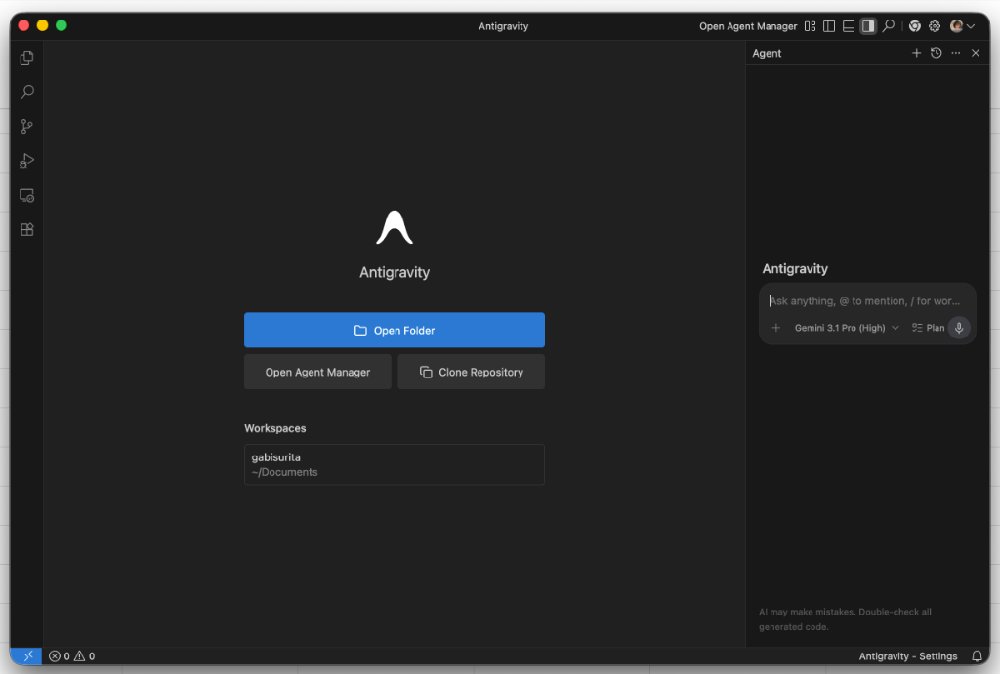
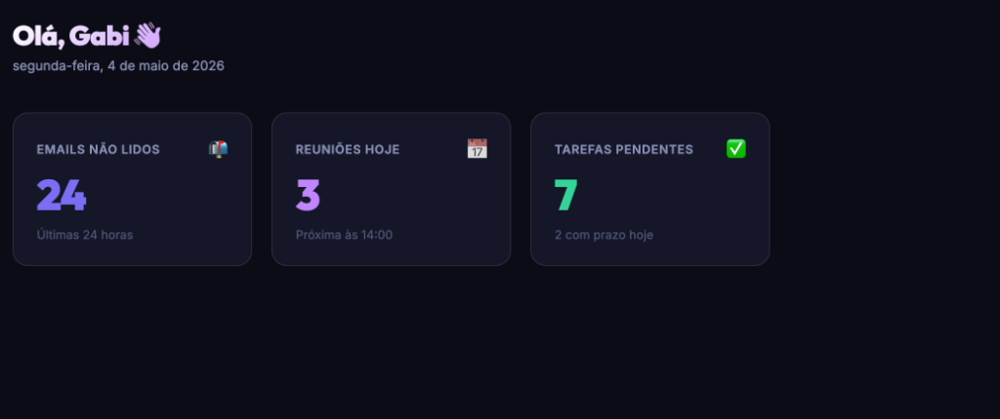
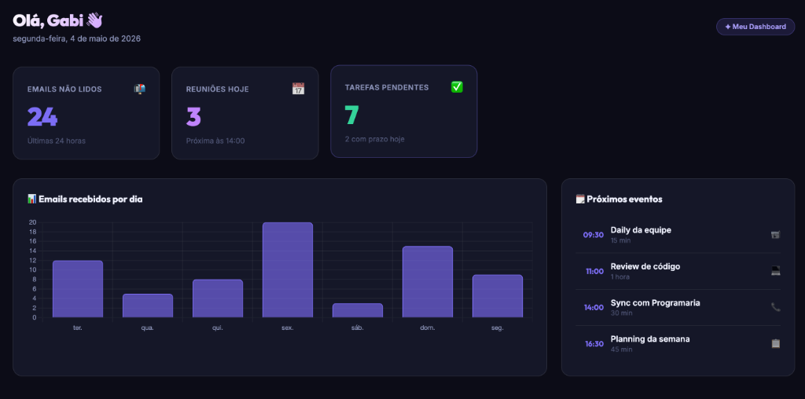

Construa um dashboard pessoal com Gmail e Calendar — do zero ao deploy, usando IA como co-piloto.
A gente gosta de começar pelo problema, antes de falar da solução.
É exatamente isso que vamos fazer aqui. Você vai construir esse dashboard — do zero, com IA como co-piloto. Não precisa saber programar do zero. Precisa saber descrever o que quer.
Antes de escrever qualquer linha de código, vamos garantir que você tem tudo configurado. São dois passos rápidos — e eles são essenciais para o restante do curso funcionar.
O Antigravity é a ferramenta de IA que vamos usar durante todo o curso. Ele roda direto no seu computador e funciona como um assistente de código que entende o contexto do seu projeto.
Após instalar, abra o aplicativo e faça login com sua conta Google. Você vai ver uma tela parecida com essa:

A interface do Antigravity: editor à esquerda, assistente de IA à direita.
Para usar as APIs do Gmail e Calendar mais adiante, sua conta Google precisa ter a verificação em 2 etapas ativada. Isso é um requisito de segurança do Google para projetos que acessam dados pessoais.
Por padrão, o Antigravity pode abrir em inglês. Se preferir usar em português, você pode mudar a língua de exibição nas configurações.
Cmd+, /
Ctrl+,)
Agora que está instalado, vamos explorar o Antigravity. A ideia é simples: você descreve o que quer, a IA sugere o código, e vocês constroem juntas. Não precisa saber tudo de antemão — o erro faz parte do processo.
Ao abrir o Antigravity, você vai ver uma interface com duas áreas principais: o editor de código à esquerda e o painel de IA à direita.
Interface do Antigravity: explorador de arquivos + editor à esquerda, chat com IA à direita.
As principais áreas que você vai usar:
Vamos fazer o Antigravity nos apresentar. No painel de IA, digite exatamente:
O Antigravity vai criar um arquivo index.html no seu projeto. Veja onde ele aparece e como
abrir no navegador:
index.html vai
aparecer lá.index.html — ele vai abrir direto no seu navegador. Você deve
ver "Hello, World!" na tela.Agora que temos um HTML funcionando, vamos transformá-lo em um dashboard de verdade — ainda com dados falsos, mas com visual bonito. A IA vai escrever tudo; você só precisa saber pedir.
Vamos descrever pro Antigravity como queremos o nosso dashboard. Seja específica sobre o visual — quanto mais detalhe você der, melhor o resultado.
A IA vai gerar um HTML completo. Abra o arquivo no navegador — você deve ver algo parecido com isso:

Como seu dashboard deve ficar: tema escuro, layout responsivo e cards iniciais.
Se o visual não ficou do seu jeito, não apague tudo — itere. Exemplos de ajustes que você pode pedir:
Você acabou de criar um dashboard de verdade — sem precisar saber CSS de cor, sem decorar APIs, sem configurar um ambiente do zero. Isso tem um nome.
Não é sobre não saber programar. É sobre mudar onde você coloca a atenção: menos em sintaxe e configuração, mais em o que o produto deve fazer e como ele deve se comportar. A IA vira uma camada de abstração — como um compilador, mas para intenções.
Em vez de pensar em como implementar, você pensa no que o usuário precisa. A IA cuida dos detalhes técnicos.
Você não precisa acertar de primeira. Vibe coding é um ciclo: pede, vê o resultado, ajusta o pedido, repete.
Coisas que levavam dias agora levam horas. Protótipos que antes exigiam um time inteiro, agora uma pessoa consegue.
Saber programar te dá superpoderes no vibecoding. Você consegue guiar a IA, identificar erros e entender o que está sendo gerado.
Vibecoding está mudando quem consegue construir software. Estudantes, designers, jornalistas, pesquisadoras — qualquer pessoa com uma ideia clara pode agora criar ferramentas que antes precisariam de uma equipe de engenharia.
Mas — e esse mas é importante — essa tecnologia tem limitações sérias que precisam ser entendidas antes de ser usada em contextos reais.
Ver limitações →Agora vamos deixar o dashboard mais rico: um gráfico de atividade de emails e uma lista de próximos eventos. Ainda com dados inventados — mas o visual já vai parecer real.
Vamos pedir pra IA adicionar um gráfico que mostra quantos emails você recebeu por dia nos últimos 7 dias. Vamos usar a biblioteca Chart.js — gratuita e fácil de usar.

Evolução do dashboard: agora com a seção de gráficos (à esquerda) e a lista de eventos (à direita).
F12 → aba Console.
Agora uma lista de próximos eventos do calendário — ainda fake, mas já com a estrutura que vamos preencher com dados reais na próxima parte.
Esta é a parte mais poderosa — e também a mais propensa a erros. Vamos conectar o dashboard com as APIs reais do Google. Se algo quebrar, ótimo: é disso que o curso se trata.
Para acessar o Gmail e o Calendar, precisamos registrar nosso app no Google Cloud Console e obter uma chave de API. Não precisa saber o que isso significa agora — só siga os passos.
meu-dashboard.
http://localhost:3000
nas Origens JavaScript autorizadas.localhost:3000 ou o domínio real do seu site possa usar essa chave.
Com as credenciais em mãos, vamos pedir ao Antigravity para criar o código de integração. Vamos usar a Service Account para que o dashboard carregue os dados automaticamente — sem precisar apertar nenhum botão de login.
service-account.json.index.html para buscar dados do Gmail e Calendar usando apenas JavaScript no
navegador:jsrsasign via CDN para assinar o JWT.https://cors-anywhere.herokuapp.com/ para contornar o erro de CORS ao pedir o
token de acesso.Vibecoding é uma ferramenta poderosa — e como toda ferramenta poderosa, pode causar dano quando usada sem cuidado. Antes de sair construindo tudo com IA, você precisa entender os riscos.
A IA gera código que parece funcionar — mas que pode ter bugs sutis, lógica errada, ou comportamentos inesperados em casos de borda. Sem entender o mínimo do que foi gerado, você não consegue identificar quando algo está errado.
"Slop" é o nome dado ao código gerado por IA que é tecnicamente funcional, mas mal estruturado, difícil de manter e impossível de evoluir. Código com duplicação excessiva, sem organização, cheio de gambiarras que resolvem o sintoma mas não o problema.
IAs treinadas em código da internet aprenderam também padrões inseguros que eram comuns antes de serem descobertos. Injection de SQL, exposição de tokens, armazenamento inseguro de senhas — essas falhas aparecem frequentemente em código gerado.
Se você nunca entende o que foi construído, fica refém da IA para qualquer mudança. Vibecoding é mais poderoso quando você usa a IA como acelerador do seu próprio conhecimento — não como substituto.
Vibecoding não é para substituir o julgamento humano — é para ampliar o que você consegue fazer. Ao longo deste curso, vamos construir com IA e vamos questionar o que ela produz, identificar problemas, e entender o suficiente para tomar boas decisões.
A melhor vibe codeira não é quem menos entende de código — é quem usa IA para ir mais longe com o conhecimento que tem.